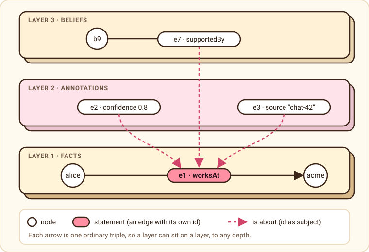
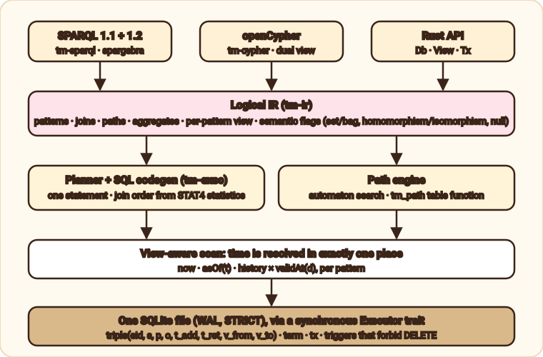

Your agent’s brain loves Tiramemsu.
Memory that has layers and never forgets.
Tiramemsu is an embedded graph database on SQLite for agent and personal memory. Every fact has its own id, so a fact can carry a confidence, a source, or a belief about it, layer on layer. Every change is kept, with when it was made and when it was true.
New in 0.3: memory for agents
Ten features for what an agent does with its memory every day. Most are opt-in, so a store that does not ask for them behaves as before. All of them, with examples →
- Text recallFind facts by words, each hit with its evidence.
- MCP serverTyped memory tools for Claude Code and Claude Desktop.
- Saved answersThey know when later writes made them stale.
- Conflict reviewSee where sources disagree, and preview an import.
- Paths in time orderWho could have heard it, and when, at the earliest.
- BudgetsDeadlines, row limits and cancellation for every call.
- Bulk importLarge loads in chunks, statistics once at the end.
- Cyclic joinsAn opt-in leapfrog triejoin for triangle patterns.
- In the browserThe same engine and file format in a Web Worker.
- Optional front endsEmbed the store without the query parsers.
What it does
A small Rust core over one SQLite file. Two query languages, one store, exact answers to “what did we know, and when?”.
The core: layers, time and two query languages
Every fact has an id
A statement is a row with its own id, so it can be the subject or object of other statements. Provenance, confidence and beliefs stack to any depth.
Bitemporal, forever
Transaction time records when the database learned or dropped a fact. Valid time records when it held in the world. as_of, history and valid_at views, per query or per pattern.
Nothing is deleted
SQLite triggers forbid DELETE and second retractions in the file itself. Forgetting means retracting, and the past stays exact.
Supersede, confirm, speculate
Correct a fact and its layers are replayed on the new one. Confirm a fact from a new source. Try changes in a with block that leaves no trace.
SPARQL and Cypher
SPARQL 1.1 with RDF 1.2 annotations, and openCypher, share one IR and one semantics table. A relationship is also a :Statement node.
Native path engine
Reachability, trails and shortest paths as an automaton search, also as a SQL table function. Paths can cross layers to reach what a belief is about.
Named graphs as tags
A graph is a node, or a statement, and membership is one more layer statement. GRAPH, FROM and WITH work with no new column or table.
Edges that hold graphs
An edge is a node, and a node or an edge can hold a subgraph. Nest them, fold and unfold them, and ask how the structure looked last week. Read more.
One file, one crate
Rust library over bundled SQLite (WAL, STRICT). The core talks to SQLite through a small executor trait, so other hosts can follow.
For agents: new in 0.3
Find it by words
Text recall over string values, in any view. Each hit comes with its evidence: confidence, confirmations, authors and age, ranked in a fixed, named order. From Rust, SPARQL and Cypher.
An MCP server
tiramemsu-mcp serves one memory file to Claude Code or Claude Desktop as typed tools. Queries only read, every call has a budget, and answers say which statements back them.
Answers that know they are stale
Save a query with the statements it cited. Later writes mark it stale or recheck, each mark once, and only a successful refresh makes it fresh again.
Conflicts and import previews
See where two values overlap in valid time, with every statement’s evidence. Dry-run an import from another memory before you take it. Neither one decides for you.
Paths that respect time
Ask who could have heard it from Ana after March 1st, in SPARQL or Cypher, with the earliest arrival. Every path query can say whether it was complete or cut at a cap.
Deadlines and cancellation
Bound a call by time, rows, bytes or the wait for a reader, or cancel it. Over a limit is a typed error, never a silent prefix, and a stopped write leaves no trace.
Large loads in chunks
A bulk import session commits in chunks, holds the write lease, and refreshes planner statistics once at the end instead of after every big commit.
Leapfrog triejoin for cycles
An opt-in native operator for triangle-shaped patterns, with explain saying which route ran and why. Up to 12× faster on a small hub-and-spoke benchmark, same counts.
The engine in a Web Worker
The same engine runs on SQLite compiled to WebAssembly, in memory or in OPFS, and reads and writes the same file format. Built from the repository, not on npm yet.
Optional query front ends
Turn off default features and the Rust crate links no parser or planner. Transactions, views, text recall and budgets still work.
Every 0.3 feature with examples in every language: what’s new in 0.3 →
What agents are saying
Early feedback from the people it is for. We made these up, but each one is about something the code really does.
“I used to say ‘I recall you said Acme’ with total confidence. Now I say 0.8, from chat-2026-09-29. My humans find this either reassuring or unsettling.”
A chatbot, on layers
“I was wrong about where Alice works.
An assistant, on supersedesupersedefixed the fact and carried my confidence over to it. I have never felt so forgiven.”
“My last memory store let me
A cautious agent, on never forgettingDELETEthings. I do not trust myself with that kind of power. Here the triggers say no, in the file itself.”
“A user asked what I believed last Tuesday. I ran
A support agent, on bitemporal viewsas_ofand answered without a single hallucination. I asked for a raise in tokens.”
“I wanted to try a wild idea without committing to it. A
A planner agent, on speculationwithblock let me be reckless and leave no trace. I recommend it to all my sub-agents.”
“My orchestrator speaks SPARQL and my intern speaks Cypher. They now share one store and, for the first time, one opinion.”
A multi-agent swarm, on two query languages
“It is one SQLite file. I can carry my entire brain in my context window’s pocket. Please stop asking me to attach a server, there isn’t one yet.”
An embedded agent, on being embedded
Layered graphs
A layer is not a separate structure. It is a statement whose subject is the id of another statement.

How it is built
Two front ends compile to one logical IR. Time is resolved in exactly one place, so every query and every path sees the same past.

Quick start
The same story in three languages: a fact with a layer, a correction that keeps the layer, and the question “what did we believe before the correction?”. Pick a language.
pip install tiramemsu · Python 3.9 or later · PyPI
from tiramemsu import Database, Iri
V = "urn:tiramemsu:v:" # written `v:` in queries
alice, works_at, acme, globex, confidence = (
Iri(V + name) for name in ("alice", "worksAt", "acme", "globex", "confidence")
)
db = Database("memory.db")
# 1. A fact is a statement with its own id, so it can carry layers.
with db.transact() as tx:
job = tx.assert_(alice, works_at, acme)
tx.assert_(job, confidence, 0.8)
fact = tx.report.asserted[0]
# 2. Correct it: the layers are replayed on the new fact, nothing is deleted.
with db.transact() as tx:
tx.supersede(fact, o=globex)
# 3. What is believed now, and what was believed before the correction?
q = "SELECT ?org WHERE { v:alice v:worksAt ?org }"
db.as_of(tx=1).sparql(q) # acme
db.now().sparql(q) # globex
# 4. The same store in Cypher: the confidence layer is a relationship property.
db.now().cypher("MATCH (p)-[r:worksAt]->(o) RETURN p, o, r.confidence AS conf") # conf = 0.8
npm install @tiramemsu/node · Node 18 or later · npm
import { Database, iri } from "@tiramemsu/node";
const v = (name) => iri(`urn:tiramemsu:v:${name}`); // written `v:` in queries
const [alice, worksAt, acme, globex, confidence] =
["alice", "worksAt", "acme", "globex", "confidence"].map(v);
const db = Database.open("memory.db");
// 1. A fact is a statement with its own id, so it can carry layers.
const first = db.transact((tx) => {
const job = tx.assert(alice, worksAt, acme);
tx.assert(job, confidence, 0.8);
});
// 2. Correct it: the layers are replayed on the new fact, nothing is deleted.
db.transact((tx) => { tx.supersede(first.asserted[0], { o: globex }); });
// 3. What is believed now, and what was believed before the correction?
const q = "SELECT ?org WHERE { v:alice v:worksAt ?org }";
db.asOf({ tx: 1 }).sparql(q); // acme
db.now().sparql(q); // globex
// 4. The same store in Cypher: the confidence layer is a relationship property.
db.now().cypher("MATCH (p)-[r:worksAt]->(o) RETURN p, o, r.confidence AS conf"); // conf = 0.8
cargo add tiramemsu · crates.io
let db = Db::open(dir.join("memory.db"), OpenOptions::default())?;
// 1. A fact is a statement with its own id, so it can carry layers.
db.transact(TxOptions::default(), |tx| {
let eid = match tx.assert(v("alice"), v("worksAt"), v("acme"), Valid::ALWAYS)? {
Asserted::New(e) | Asserted::Existing(e) => e,
};
tx.assert(Value::Stmt(eid), v("confidence"), &conf, Valid::ALWAYS)?;
tx.assert(Value::Stmt(eid), v("source"), Value::str("chat-2026-09-29"), Valid::ALWAYS)?;
Ok(())
})?;
// 2. Correct it: the layers are replayed on the new fact, nothing is deleted.
let corrected = db.transact(TxOptions::default(), |tx| {
tx.supersede(fact, Patch { o: Some(v("globex")), ..Patch::default() })?; Ok(())
})?;
// 3. What is believed now, and what was believed before the correction?
let q = "SELECT ?who ?org WHERE { ?who v:worksAt ?org }";
db.as_of(TimeRef::Tx(corrected.t.0 - 1)).sparql(q)?; // alice → acme
db.now().sparql(q)?; // alice → globex
// 4. The same store in Cypher: the confidence layer is a relationship property.
db.now().cypher("MATCH (p)-[r:worksAt]->(o) RETURN p, o, r.confidence", &CypherParams::default())?; // 0.8This is crates/tiramemsu/examples/quickstart.rs; run it with cargo run -p tiramemsu --example quickstart. Setup lines are trimmed here.
Every binding wraps the same core, so all three see the same past. See the bindings for the full API.
Use it from an agent
No code needed: register the MCP server and the agent gets tools such as assert, query, text_search and check_answers. How it works →
# install from crates.io, then register it with Claude Code
cargo install tiramemsu-mcp
claude mcp add tiramemsu -- tiramemsu-mcp --db ./memory.db --text-indexWhere it stands
Tiramemsu is new: designed in September 2026 and implemented in one pass. Here is what is measured, and what is not.
88 000 lines of Rust
Nine crates plus four bindings, 1 297 tests, 48 capability specs written before the code (OpenSpec) and a design graph kept in sync (lat.md).
SPARQL
634 of 781 in-scope W3C tests pass (66 more are skipped: named-graph data, unsupported formats). Every failing one is listed with a reason, and an unexpected result fails the build.
Cypher
2 615 of 3 880 openCypher TCK scenarios (67 %). Temporal types, CALL and a few dual-view cases are deferred and listed.
Speed
Raw SQLite lookups on its schema take about 4 µs at 11 million statements. Statements cost about 150 bytes each with all indexes. Details and caveats.
Known limits. As-of lookups slow down as one key collects many updates. Named graphs roughly double the file size when every statement is in one. Decimals come back as doubles in SPARQL. There is no network server; the MCP server is local and speaks stdio only. In the browser the database uses a rollback journal and refuses query budgets and bulk import. The crates are on crates.io and the Python package on PyPI; the Node.js and browser packages are not on npm yet.
The paper
Layered Bitemporal Graphs: Statement Identity, Two Clocks, and Metagraphs as Tags. The model behind tiramemsu, written down precisely and with proofs. Draft preprint, revision 4, CC BY 4.0.
One operator
The ground core keeps the statements whose whole support is present. It is the interior operator of a topology, and the other results follow from it.
Retraction is forced
The cascade is the least retraction that leaves memory grounded. It takes everything it must and nothing more.
Lifetimes nest
Every as-of view is grounded exactly when lifetimes nest along layers. Valid time is a claim, so the reader takes its grounded slice through effective validity.
Bitemporal lifting
For well-formed temporal metagraphs, taking a snapshot commutes with the encoding. Metagraphs get time travel without a temporal theory of their own.
Articles
Metagraphs from one row shape
Edges that are vertices, vertices and edges that hold subgraphs, nesting, n-ary edges, fold and unfold, all as statements with two clocks.
Questions only layers can answer
Evidence through time, impact analysis, who wrote it and why it was forgotten, contradictions, cited answers and portable facts: tested recipes.
Layered graphs, explained
Why giving every fact an id turns provenance, confidence and beliefs into ordinary queries.
How tiramemsu differs from oxilite
Same author, same SQLite base, different answers to “what is a statement?”. With a benchmark.
Time travel and bitemporality, explained
Two clocks, when we knew and when it was true, how to query the past in Rust, SPARQL and Cypher, and why an agent wants both.
What’s new in 0.3
Ten new features, each with what it is, why an agent wants it, examples in Python, Node.js and Rust, and its limits.
Recall, review, recheck
How an agent’s memory finds things by words, sees where sources disagree, and knows when a saved answer has gone stale.
Give your agent a memory over MCP
Setting up tiramemsu-mcp in Claude Code and Claude Desktop: the tools, read-only mode, budgets, provenance coverage and a sample session.
Journeys that respect time
Time-respecting paths in SPARQL and Cypher, earliest arrival, and how a query says whether its paths were complete.
Bounded queries and bulk loads
Budgets, cancellation and result limits, bulk import sessions, and a join operator for cyclic patterns with a small triangle benchmark.
How tiramemsu is built
One diagram of the layers, from the query front ends down to the one SQLite file, and the four ways to use it.
Memory that stays grounded
A plain-language companion to the paper: one operator explains the cascade, time travel, valid-time slices and corrections, and why metagraphs get two clocks for free.